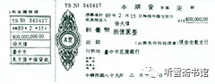

第十一章 阴差阳错
一
“瓦良格”项目真是一波三折，先是徐增平挪用购买航母的专款，后是泰信达公司出现分裂，再后是邵淳被上级撤职审查，华夏证券公司派出了“四人临时领导小组”成员之一的程炳仁负责“瓦良格”项目，其任务不是进行项目运作，而是追索投资。
吴宇已经被双规，邵淳要想再从隆泰源公司往外调钱是不可能了，从华夏证券总公司调钱更不可能，而下一步还要花很多钱。
关键的问题是，邵淳的停职，使“瓦良格”项目失去监督和指导。东方汇中公司的刘兴元和戴岳就成了这个项目的独立领导人。
当初邵淳请东方汇中公司参与“瓦良格”项目，主要是想借助他们的背景资源把这个项目做成，甚至要把澳门创律公司的股份转给他们，而当时的东方汇中公司董事长高增厦则想利用华夏证券的资本资源为本公司融资，推动其它自营项目的运行。这本来是一个互惠互利的合作，如果中间不出现徐增平告状、高增厦被迫离职、邵淳被查等“意外事件”，也许就不会出现后面发生的“惊天大案”了。
东方汇中公司总经理戴岳曾三次去乌克兰，两次去土耳其，他非常清楚，仅凭公司能力，要把这条船拖回来的难度有多大，以邵淳的处境和东方汇中的能力，这条船可能永远都拖不回来。
1999年12月3日，联合调查组在进驻华夏证券公司的同时，也进驻了东方汇中公司，主要调查华夏证券公司投入项目的资金使用问题，要求东方汇中公司积极配合。两周后，调查组撤离。其间，高增厦、戴岳等人都汇报了项目运作的情况，并请示下一步项目如何运作。调查组对此没有表态，只说项目是企业自己搞的，后果自己承担。至于是否交给国家，如何交给国家，国家要不要接管等问题，调查组未予说明。也就是说，调查组关心的是华夏证券公司投入该项目的钱怎么收回来，其他事概不受理。
戴岳等人后来得知，当时国家对如何利用“瓦良格”并无定论。
失去了华夏证券公司在资金上的支持，东方汇中公司几个已经开发的项目资金上出现了困难，本公司的自营业务需要钱，“瓦良格”项目也需要钱，仅滞港费就是一笔不小的开支。钱从哪里来？东方汇中公司承担了巨大的经济压力，必须采取措施自救啊！刘兴元和戴岳商议决定，利用各种资源，进行社会融资。在为公司的有关项目融资的同时，还要为“瓦良格”寻找出路。“瓦良格”项目本来就是以赌船的名义去乌克兰投标的，现在国家不要它，只能继续以赌船的名义去改装航母，去联系合作方了。
据东方汇中公司原办公室主任王毅民介绍，当时他和一家名为“拉拉手”的广告公司一起，为赌船做博彩广告宣传页，目的是为了寻找合作伙伴。那段时间，东方汇中公司接触过的商家很多，有台湾的博彩公司，有菲律宾的华侨，还有柬埔寨政府。与柬埔寨政府的谈判是由刘兴元出面的。刘兴元曾想把“瓦良格”改装成娱乐船，就停在柬埔寨附近的海面上，搞一个“海上娱乐城”。
张勇听刘兴元说，找他们洽谈的台湾机构有：台湾新中华公司、台湾远东国际投资公司以及台湾某博彩公司，尤其是这家博彩公司的背景很复杂，后台老板与国民党政要关系密切。
张勇对刘兴元说：这个事让台湾人参与不合适吧？
刘兴元说：管他呢！谁给钱多就卖给谁。
张勇心想，这不是个钱多钱少的问题，而是个大是大非的问题，弄得不好，要出乱子。
接着，刘兴元又半开玩笑地说，老张，咱们要能拿到两亿美金，不管从哪拿，大家一分，一走了事。张勇当时听了笑笑，没往心里去。
后来笔者在采访王毅民时，和他说起此事，王毅民说：刘兴元是个“大嘴”，喜欢胡说八道！他还说，将来每人弄个直升机，到船上玩去！
就在刘兴元胡说八道不久，一件与台湾公司有关的事情真的来了。
2000年3月5日，张勇刚刚处理完澳门创律公司拖欠物业费和租金的事情，到深圳办事，突然接到戴岳的电话，让他在深圳接待台湾新中华公司的两位客人。
戴岳说：你好好接待，有些情况问清楚。他们对“瓦良格”有点兴趣。
张勇接到这个电话，心里开始嘀咕：戴岳他们真要把“瓦良格”卖给台湾公司啊！他们到底是怎么想的？这可是个大是大非的问题，弄不好要出乱子。不管怎样，先见见这两个台湾商人再说。
张勇在深圳的上海宾馆给他们安排住处。刚开好房，客人就到了。初次见面，张勇对二人的第一印象不是很好。二人的年纪都在50岁左右，油头粉面，手上戴着很大的金戒指，项上套着很粗的金链子；每人提了一个皮包，沉甸甸的，不知是文件还是钞票；西装很新，像是专为这次见面刚买的。能展示的东西都挂在外头了。
张勇认为，真正办事的人不是这样的。张勇在商场上打拼几十年，也算是见过各种世面的人，打过交道的大小老板不计其数，大老板如李嘉诚、何鸿燊、霍英东等，小老板就不用说了。在商场上混，穿戴自然要体面，但也不是这样“武装”自己啊！
二人住下以后，拿出公司的营业执照给张勇看。那是台湾的企业执照，上面有国民党的党旗和萧万长的签字。他们解释说，萧万长秘书长分管国民党的“党产”。
我在写此书时，专门上网查过，萧万长自1997年至2000年是国民党“行政院长”，并非国民党中央秘书长。或者是他们口误，或者是萧万长以前当过秘书长，他们叫习惯了。
简单寒暄过后，张勇就请他们在饭店餐厅吃饭，边吃边聊。张勇发现，这两位台湾商人像是饿了好几天，吃相很难看，谈吐也缺少斯文，有些不成体统。张勇想和他们谈谈关于“瓦良格”的事，他们也谈不出个所以然。张勇感觉二人来路不正，属于那种专门出来混吃混喝的“混混儿”。
第二天（3月6日）早晨吃早餐的时候，台湾商人对张勇说：张先生，我们今天去香港办点事，晚上回来，这个房间别退，房卡我们带着。
这种要求有点过分，给张勇的感觉是：如果真是国民党中央企业的代表，这也太丢脸啦！两间客房才几个钱啊！就这个样子还想买航母？张勇想拒绝他们的要求，犹豫了一下，同意了，说：“房卡你们拿着吧！”他想看看二人还会怎么表演。
当天晚上，他们又回到上海宾馆住了一夜。张勇已经没有与他们继续交流的愿望了。
第三天（3月7日）早上，张勇对他们说：我也挺忙的，就不陪你们了，有关事情我们研究一下再联系。
就这样，他收回房卡，把房间退掉了。
张勇把接待二人的情况向戴岳做了通报。张勇问戴岳：他们是何方神圣？简直是乱弹琴！不像是正经干实事的商人。
戴岳说：你回香港到弥敦道调查一下，看看到底有没有这个公司。他们要在，你拜访一下他们；要不在，说明是空的。你辛苦一点儿吧！
张勇按照对方提供的公司地址，到香港弥敦道××号一看。那是一个商业中心，二十几层高。按照名片上的户号一查，就一间房，一个员工说：我们在这十几年了，从来没有听说这家公司。张勇马上给戴岳打电话：戴总，这个公司是虚的，可能是个皮包公司。
戴岳愕然：怎么这样子？我知道了！
二
2000年3月7日下午，邵淳从外面回到办公室，秘书王中告诉他，有一个叫王××的人留言，有重要的事情要见面谈。
邵淳问：他没说什么事么？
王中回答：说是跟那个船有关的，非常重要。请你到他那里去，他有些东西给你看。
王中把王××留下的名片递给邵淳。名片上的单位是一家航空工业公司的子公司，王××的职务是总经理助理。邵淳想：这个人不认识啊！航空公司和船有什么关系呢？
他给王××打了电话：我是邵淳。
王××说：邵总，我早就听说你的大名了。我有个急事，非常重要。电话里不方便说。
二人约定第二天（3月8日）到王××所在的公司见面。
华夏证券公司距离王××的公司不远，邵淳带着王中去见王××。简单寒暄过后，进入正题。
“我知道你在做‘瓦良格’项目，也知道你现在正在被调查。东方汇中的人想把‘瓦良格’卖给台湾人。”
邵淳听了大吃一惊：有这种事？
“他们和台湾公司谈了好几遍了，意向都定了，就要签协议了。”
“他们要把航母卖给台湾公司？”
“他们是向台湾公司借款，两亿美金，对方提出来要抵押物，他们同意用航母做抵押。”
邵淳知道，东方汇中公司接手“瓦良格”项目以后，公司自营业务受到一些影响，邵淳在位时，曾经借款4000万人民币帮助他们解决难题；邵淳被停职以后，他们的一些投资项目面临资金链断裂的危险。可再困难也不能找台湾公司借钱，用航母做抵押啊！如果借款到期不能归还，抵押物就是人家的了！
王××接着说：现在船主证在东方汇中手里，就等乌克兰方面的评估报告了。据说，评估报告3月18日出来，他们已经订了3月17日的机票，要到乌克兰去签协议。
邵淳见他说得头头是道，就忍不住问：你有什么证据？
王××说：这有东西啊！顺手拿出一个文件夹，递给邵淳。你看吧！他们已与两家台湾机构洽谈，拟以“瓦良格”号抵押给台湾。一家已谈成，以船的40%权益抵押8亿新台币；另一家将船的权益抵押2亿美元，即将签订协议。台湾方面很积极，第一家已开出银行本票，待船舶评估报告一拿到手，即可成交。这是他们往来的邮件和传真，还有台湾公司的登记注册资料。
邵淳看了这些资料，不由得吓了一跳。其中一家是国民党总部下属的公司－－远东国际投资有限公司（正是张勇调查过的那家公司），公司资料上面有国民党的党旗、党徽。
把“瓦良格”卖到国民党手里，这可不是一个小问题。最让邵淳吃惊的是那张2亿美元的银行本票。邵淳认为，交易基本谈成了，对方才能开出银行本票。开本票的前提，必须把钱存在银行里。这就是说，这件事不是刚刚接触了几天，而是有段时间了。另外，银行本票是有期限的，且无条件见票即付，不管什么人拿到，银行都得支付给你。
还有一个在什么地方兑现的问题。本票的兑现区域，应该是在该银行的交换区域内。银行要跟对方签代理行协议，只有这种关系，才纳入交换范围。这张台湾银行的本票，大陆肯定无法兑现，这就意味着这张本票只能在大陆之外成交。到了乌克兰，拿到评估报告，办了相关手续，随时可以兑现。
邵淳看过材料，问王××：你给我看这些材料，目的是什么？
王××说：我认为形势严重，建议你马上报告上级，阻止事态进一步恶化。
邵淳问：你怎么不报？
王××说：瓦良格的事，谁愿意沾啊！再说现在上面不是正查你嘛！所以我们觉得，由你来报最合适。你是当事人，你的报告会引起上级的重视。
“我根本就不可能知道这些事啊！人家要问我，这情况哪来的？这不是开玩笑么？这么大事，我又说不出消息来源。”
“没关系，你可以说，消息是我给你提供的。”
“你怎么能提供呢？”
“那就不用你管了。你就说是我提供的，让他们找我核实。我们全力配合。”
邵淳想，这么大的事，如果不赶紧采取措施，还有10天，戴岳他们就去乌克兰了。
从王××那里回来，邵淳一直在想：怎么处理这个事情呢？心里像压了一块大石头，茶饭不思。晚上，他决定向调查组报告。他给调查组的古树林处长打电话，在电话里把台湾人与航母的事情简单说了一下，最后强调，“这是大事，我第一个向你汇报。”
古树林说：我不在北京，我在成都呢！我给你联系车书记吧！
过了一会儿，古树林回话：明天上午9点，你到车书记办公室向车书记汇报。
3月9日上午，邵淳带着秘书王中一起去见调查组副组长车××，建议组织进行核实。车××听了邵淳的简要汇报，感到很稀奇：有这个事儿？
邵淳说：有。我原来说，你们调查组把船接过去，你不接，现在要出问题了，大问题啊！
车××问：王××是什么人？
邵淳说：我也不知道。前天他来找我，我不在，我昨天去见的他。你们赶紧采取措施。
车××说：我们当前的任务仍然是继续与东方汇中公司落实债券债务关系。
邵淳说：落实债券债务的结果是股权的变更，过去这样考虑是没有问题的，但现在他们要把船抵押给台湾，如果我们在这种情况下，还把股权交给东方汇中公司，是否妥当？一旦抵押协议生效，最后台湾把“瓦良格”拿走，这个责任谁来承担？
车××说：目前谁也没有说这个船不能给台湾，他们如果真能抵押出两亿美元，华夏公司的钱不就收回来了么？
邵淳一听，差点没晕倒，心里说：就这个水平，也配来查我？
邵淳耐着性子说：车书记，这不是钱的事，这可关系到两岸的军力对比啊！关系到两岸的军心、民心啊！你想过没有？再说了，就算他们拿了两亿美金，不可能给我们，他们在境外成交，两个人到哪儿一藏，隐居了，你上哪儿找去？
车××听邵淳这么一说，神情才开始庄重起来。
邵淳说：车书记，你赶紧和王××联系，你来核实我跟你说的情况，尽快核实，尽快采取措施，务必不能让那两个人出国。涉案资产的资料，你们为什么不收啊！要把所有的文件都收走。
车××说：行了，我知道了。
一连过了两天，邵淳从王××那里得知没有什么人和他联系，越发坐不住了。
邵淳对秘书说：王中，咱得把向车××口头汇报的事情一条条写下来，我怎么说，他怎么说，整个过程，不能遗漏。
邵淳整理这个材料的目的是要留下一个历史文件，以免将来发生什么事情，空口无凭。
材料整理出来以后，邵淳就派人给车××送去一份，一是送他备案，二是想催促他一下。
又过了一天（3月12日），还是没有消息，王××坐不住了，邵淳也坐不住了。他向公司领导小组负责人赵大建、程炳仁做了汇报，他们也认为应当对刘兴元和戴岳采取措施，现在已不宜把股权落实给东方汇中公司，但是要等一等调查组的意见，按调查组的意见办。
这时，古树林处长已返京，邵淳问他见了车书记没有，有没有新的精神？古树林说，见了，车书记的意见，仍然是落实债券债务。
这时，邵淳感到事情难办了。他知道，在这种情况下，如果一味坚持自己的意见，对自己不会有好处，但为了阻止事态恶化，为了对国家负责，还是应当坚持自己的意见和建议，把个人得失放在一边。他于3月13日和3月15日，两次书面报告了王××通报的情况和新动态，并再次提出了防范控制措施的建议。同时，按照调查组的意见，他和程炳仁一起，再次约见东方汇中公司总经理戴岳，强调指出：在“瓦良格”项目上，要从大局出发，维护国家利益，妥善处理该船。
戴岳说：现在国家不要这个船，企业很困难，在船的运作上，只是单纯的商业运作，希望调查组明确表态，国家不再干预该项目的运作。
戴岳的态度，让邵淳感到事态非常严重，“瓦良格”项目再也不能让东方汇中公司继续运作下去了。可是，怎么办呢？
3月16日，邵淳约了国家安全部的一个朋友和总政的一个朋友见面，并征求他们的意见：这个事到现在这个程度，怎么处置？
两位朋友都表达了相似的意见：如果按照正常程序上报材料，运转时间不够，必须采取特殊措施。
总政的朋友说：你把这个情况写下来，把严重性、紧迫性说清楚，再把给调查组的报告附在后面，直接报最高层。
邵淳有些犹豫，说：我报了，他们都不一定看得见。
国家安全部的朋友说：你报告里要写清楚，这是大事，特别紧急，哪个环节都不要压。
邵淳说：这玩艺儿是真的是假的啊？我心里有点拿不准，本来上级就在调查我，我再来个“欺君之罪”，这个事可就闹大了！
总政的朋友问：你现在能确认是假的么？
邵淳说：我不能确认。
国家安全部的朋友说：只要你不能确认是假的，只要你有你的消息来源，只要你向上级汇报的情况与你的消息来源一致，你必须报！你心里就是有问号也得报！万一你判断失误，不上报，这个事可不得了！
邵淳又思考了一会儿，心一横，颇有些悲壮地说：好，就按你们的意见办！他的这一举动，后来被人称为“冒死上谏”。
国家安全部的朋友说：你给我们一份，我们找渠道往上报，肯定会报得快！
邵淳和王中马上行动，很快材料写出来了，一式四份。3月16日，邵淳分别送给那两位朋友各一份，送给调查组一份，送给华夏证券公司一份。
邵淳对公司临时负责人赵大建和程炳仁说：你们按照程序上报吧！情况非常严重，要出大事，我报给你们，你们不及时上报，后果你们负责。
赵大建说：这个事情是你搞的，我们都没经手。
邵淳说：你要是不报，掉脑袋的是你！反正我报了，就没我的责任了。本来也没我什么责任。
程炳仁说：得，咱主不了这事儿，赶紧报，赶紧报！
程炳仁是北京市金融工委的干部，1998年10月，邵淳第一次被调查期间调到华夏证券工作，是赵大建牵头的“四人临时领导小组”成员之一，位置排在赵大建之后。
程炳仁马上给北京市金融工委写了一个报告，大意是：邵淳同志反映的情况，我司不好处理，请示上级酌处。邵淳情况反映附后。
程炳仁亲自把材料送上去了。
报告送出以后，邵淳心中惴惴不安，不知他的“冒死上谏”到底会带来什么后果。尽管他知道自己心怀坦荡，毫无私利，是经得起组织调查的，身子正不怕影子斜嘛！可这购买航母的项目，几个亿的资金砸进去了，能不能收回来不知道，那个远在万里之外的航母，国家要不要也不知道。如果船回不来，钱就回不来；如果钱回不来，国家的损失可就大了！这事总要有人出来负责的。谁负责？当然是决策者啦！那是三四个亿的人民币啊！即便定性为“决策失误”，邵淳也难辞其咎。他已做好了应付最坏局面的准备。
等待高层消息的那十几个小时，是邵淳人生中最难熬的时光。焦躁，漫长……
终于，邵淳等来了好消息。他的报告受到中央高层的高度重视。
邵淳事后了解到，四份材料，国家安全部的动作最快，当天晚上就报到高层那里去了。随后，另外几份也都报上去了。
中央领导接到报告后，作出三条批示，大意是：一、要不惜代价，把“瓦良格”拉回来，不能落到台湾人手中。二、请刘积斌同志负责，由国防科工委牵头，会同有关部门，接手“瓦良格”的后续操作。三、今后此类国家重大采购，宜由国家指定的职能部门办理。
3月18日，国务院专门召开会议研究此事。王××被叫到会场接受质询。
那一年的3月20日，台湾将进行大选，根据民调显示，民进党候选人陈水扁当选的概率很高，中央非常关注台湾选情。就在这个敏感的时期，突然冒出来一个与“瓦良格”号航母有关的“台湾公司事件”，引起中央高度重视，这也导致了正处于困境的“瓦良格”项目出现重大转机。
三
“台湾公司事件”是“瓦良格”项目的重要转折点。为了保证我对这个事件的表述尽量客观、公正，我不但要听邵淳怎么说，张勇怎么说，还要听听其他当事人怎么说。可惜，刘兴元因为涉嫌经济诈骗一亿多人民币，被抓起来了，无法采访他；王××则行踪诡秘，神龙见首不见尾，也无法采访。所幸我在高增厦的帮助下，采访到了另一位重要当事人戴岳。并在戴岳的帮助下，采访到了“台湾公司事件”的具体经办人、原东方汇中公司办公室主任王毅民。“戴岳版”和“王毅民版”的故事，还真与“邵淳版”有所不同。
综合戴岳和王毅民介绍的情况，下面说说这个件事的另一个版本。
1999年7月初（这时“瓦良格”项目尚未完全交给东方汇中），经王毅民的朋友牵线，戴岳认识了香港新中华（集团）投资有限公司的老板。新中华公司愿意向中国大陆企业借贷资金，只是利息比较高，尤其是一次性贴息更高。当时东方汇中公司启动的吉林和龙脱硫净化装置和重庆西南制药一厂二期迁建工程项目缺乏资金。对方研究了这两个项目的资料，认为很好，双方约定在深圳谈判。
谈判期间，东方汇中公司按照惯例，要求新中华公司提供资信证明。对方以公司更名改组为由，暂时搁置了这个项目。一直拖到2000年2月初，项目重新启动，此时新中华（集团）投资有限公司已更名为远东国际投资有限公司。2月12日，双方签订了《申请贷款确认书》等一系列文件。2月15日，远东公司用传真发来了台中市花旗银行8亿新台币的银行本票复印件。
戴岳一看，是新台币不是港币，就起了疑心，问：你们不是香港公司么？怎么又变成台湾的了？对方回答：我们的公司总部在台湾。
这样一来，事情就变得复杂了。
“台湾咱没关系，没法查，他既然是香港的公司，可以让张勇去查。”戴岳在接受笔者采访时说。
3月7日，张勇给戴岳打电话通报情况：经到远东公司办公地点调查，香港弥敦道××号没有这家公司，很可能是皮包公司。戴岳得知这个消息，就把这家公司放弃了，有关文件很随便地扔在桌子上。根本没有什么订票出国签协议的事情。
据戴岳介绍，他和前文提到的给邵淳提供材料的王××很熟，王××经常到他办公室来。他怀疑王××的那些文件是从他那里拿走的。
恰恰是在3月7日下午，王××去华夏证券公司找邵淳，邵淳不在，两人电话约定3月8日在王××的公司见面。
这两个版本中有两个问题对不上，一个是邵淳看到的是两家台湾公司的材料，其中一家有2亿美元银行本票，戴岳说的是一家台湾公司，是8亿新台币（折合人民币2亿元）银行本票；一个是王××说戴岳他们已经订好了3月17日的机票，戴岳则说他们已经放弃台湾公司，根本没有订机票的事。
关于银行本票问题，我在王毅民那里查到了远东国际公司出具的台中市花旗银行8亿新台币银行本票的复印件，王毅民说，他没有听说有第二家台湾公司。而邵淳所说的是2亿美元的银行本票及其他材料，他已经作为附件上报中央，我无法核实，但邵淳言之凿凿：是2亿美元，不是8亿新台币。这就奇怪了，那2亿美元本票是怎么回事呢？
- 
- 台湾台中市花旗银行出具的8亿新台币银行本票（王毅民提供）
关于订机票问题，戴岳说，一个3月7日就被中止的项目，还订3月17日的机票干什么。再说了，我在1999年12月就被限制出境了，护照还扣在机场公安局入境办公室，我明知不能出境还会去订机票？戴岳这话听上去似乎很有道理，而邵淳当时只是听王××那么一说，并没看见机票的复印件。
另外，我在东方汇中公司保存的远东国际投资有限公司的《借贷合同书》里，没有看到关于用“瓦良格”号航母做借贷抵押的抵押协议，只看到了《申请借贷确认书》中写道：企业或公司因西南制药一厂二期迁建项目需要资金，用公司投资项目作为抵押借款，申请金额为贰仟伍佰万美元……
高增厦则比较认同“戴岳版”、“王毅民版”的说法。他认为，这件事有他把控，不会让把航母卖给台湾的事情发生。
现在看来，要想把2亿美元的银行本票和3月17日的机票问题搞清楚，必须找王××。尽管从目前笔者掌握的资料来看，并无东方汇中公司欲将“瓦良格”号航母做抵押，向台湾公司融资的证据，但是从当时王××交给邵淳的资料来看，却是有这种倾向的。于是国家高层领导根据邵淳上报的材料，责成国务院处理此事。3月18日的国务院会议决定：国家接手“瓦良格”项目。
四
国务院的这个决定，让邵淳一直悬着的心落下来了。他坚信，只要国家接手，这个船就有拖回来的希望了。
4月1日，邵淳得到消息，公安机关将于4月2日抓捕戴岳、刘兴元、刘继等人。他于当日晚紧急约见高增厦和王广平，向他们通报了国家要抓捕戴岳等人的信息，并要求他们一定要保密。邵淳之所以要向高增厦和王广平通报此事，因为他们是“瓦良格”项目联合领导小组成员，出了这么大的事情，应该让他们知道。
第一个被抓的是刘继律师。
4月2日凌晨2点左右，刘继正在睡觉，忽然传来敲门声。这么晚了，什么人？门外回答：“北京市公安局的。”
打开门一看，门外站着七八个人。一个领头的说：是刘继律师吧？有件事，需要你配合一下。
刘继被带到一个宾馆，被监视居住了10天。在此期间，刘继被询问了一些问题：到乌克兰是怎么回事？“瓦良格”项目是怎么参与的？其中做了什么事情？等等。
刘继反复向办案人员“交代”经过，最后办案人员把在乌克兰交船时交付的全套文件拿来让他确认，因为这些文件当时都是过他手的。据刘继回忆，办案人员对他挺客气，应他要求，每天让他喝点小酒，但是不准他离开房间。
第二批被抓的是戴岳、王毅民、刘兴元。
4月2日是个周日，戴岳和王毅民本来应该休息，因为公司有事，他们准备去公司加班。早晨8点多钟，戴岳开了一辆“大宇”牌汽车，王毅民坐在副驾驶位置上。汽车刚从他们居住的解放军后勤学院大院出来，就有两辆挂有“京O”号牌的轿车呼啸而上，一前一后把“大宇”加在中间。
戴岳说：怎么回事？下去看看。
他们刚下车，就被几个黑衣大汉围住了。
“别动，我们是警察！”接着手就上来了，非常专业地从他们腋下到脚腕迅速搜了一遍。王毅民后来得知，事先有人告诉他们，这两个人都当过兵，身上可能带着家伙。
警察搜完身，接着把他们二人分别带上前后两辆“京O”汽车，一个警察开着戴岳的“大宇”，三辆车沿着复兴路向东，朝着长安街的方向飞驰而去。王毅民坐的那辆车的后座上，堆了好几件棉大衣，估计警察这一夜都是在车上睡的。想想警察这个职业也挺辛苦。一定是因为戴岳和王毅民住在部队大院里，警察不便到部队大院里抓人，只能在外守株待兔。否则他俩就会像刘继那样，半夜就被带走了。
王毅民坐的那辆车上有三名警察，前座两名，后座一名。王毅民问身边的警察：到什么地方去啊？
那警察黑着脸说：别说话！
王毅民闹了个没趣，便不再说话。随他们去吧！
汽车最后在北京火车站附近一个小胡同的一座破旧的三层小楼前停下。王毅民从车上下来，看见戴岳，就走过去对他说：怎么回事啊，老戴？
还没等戴岳回答，立刻有一名警察对王毅民说：不准说话。分开！警察大约是怕他们“串供”。
他们被两拨警察分别带走了。王毅民被带到二楼的一间办公室，两名警察都对他挺客气，给他倒了一杯茶，然后开始问话。
闲聊中，王毅民了解到，那个负责询问他的警察原来曾在北京军区服役。警察问王毅民：你们是不是要把这个船卖给台湾？
王毅民说：怎么可能？你想啊，你也是当兵的出身，咱当兵的这点觉悟和常识还是有的，怎么可能把船卖给台湾？”
下午，警察又把王毅民和戴岳拉到刘继所在的那家招待所。
其间，警察从戴岳处要来东方汇中公司的钥匙，让王毅民到公司去拿与“瓦良格”项目有关的文件。在去公司的路上，王毅民问警察：你们凭什么把我们弄起来不让回家？
警察说：这是上面交代的。
到了公司，王毅民将有关文件交给警察，警察看了说：人家挺正规的嘛！
看完材料，警察对王毅民的态度完全变了，用抱歉的口吻说：哥们儿，这是御案。请理解。
王毅民自嘲道：不是有人说么？没有坐过监狱的男人，不能算是真正的男人。我也正好体验一下生活。
警察接着说：不过御案也有错的。
此后警察再没有为难他们。王毅民在那里闲着无事，完整地看完了一部电视连续剧《李卫当官》。他在接受笔者采访时笑道：平时哪有时间看电视剧啊！
4月12日，戴岳和王毅民被放了出来。后来得知，刘兴元也被关在那里。也是同一天被释放的。
又过了一段时间，戴岳才知道他们被抓，是因为邵淳给中央高层写了一封举报信。为此戴岳一直对邵淳耿耿于怀。戴岳认为：这个事情是假的，本来咱们是一个战壕的战友，是哥们儿，如果互相通个气，马上就会把事情搞清楚，何必搞得这么神神秘秘，惊天动地？
戴岳甚至认为，这是邵淳为了拿回澳门创律公司的股权及“瓦良格”航母的所有权而与王××共同设的一个“局”。这是戴岳接受笔者采访时说的。
我将戴岳的这个说法向邵淳求证，邵淳非常认真地说：这不是一个普通的小事情，是关系到国家利益的大事情。不要说是朋友，哥们儿，就是夫妻，也不能私下通气啊！
对此，我倒是可以理解邵淳。当时邵淳正处于停职调查期间，并且被调查组认定他“参与政治”，如果“瓦良格”再与台湾扯上关系，那真的成为“政治事件”了。邵淳当初热心支持贺鹏飞要把“瓦良格”买回来，是为了国家，为了海军，如今有人要把“瓦良格”抵押给台湾公司，有悖他的初衷，这是决不能允许的！
正是由于这样的原因，邵淳才有了“冒死上谏”的行动。
至于说邵淳与王××设“局”一事，邵淳说：在此之前，我根本不认识王××。
戴岳在接受采访时曾对笔者说：老邵弄的这个事儿让我挺生气的。
不过时过多年以后，戴岳心中的郁闷，也渐渐释然了。
戴岳的家人曾对他说：要没有这事儿，航母真砸在东方汇中手里了。
戴岳也这么想：不管怎样，能把航母交到国家手里，最后搞成了“辽宁舰”，这个结果挺好的。阴差阳错，办成了一件好事！
“台湾公司事件”，真的是一场乌龙？
这里面有太多的疑问。在没有把真相搞清楚之前，我只能把不同的说法都写出来，立此存照。
五
2000年3月7日，张勇接待完台湾商人之后，就去武汉了。他并不知道北京发生了什么事情。张勇的家在武汉，一直没有迁港，一有时间他就会飞回武汉与家人团聚。
2000年3月25日，张勇接到吴巍的电话：张总，你在哪里？
张勇说：我在武汉。
吴巍说：我来看看你，有点急事。
当天下午，吴巍来到武汉，见到张勇就开门见山地说：邵总让我跟你联络一下，明天到深圳开个紧急会议。他已经直接飞到深圳了。
张勇问：什么事那么急啊？
吴巍说：是关于台湾商人要买航母的事。
张勇说：那也不用你专门跑来武汉一趟啊！你告诉我去深圳开会就行了……
吴巍说：邵总不了解你对台湾公司这件事的态度，担心你不去深圳。
张勇说：我的态度很明确，当初我就对刘兴元说过，台湾人参与航母的事情不合适。
第二天（3月26日）上午，张勇和吴巍从武汉飞到深圳，在深圳景轩酒店与邵淳见面。此时邵淳等人的一切行动，都在调查组的监控之下。邵淳知道，张勇不知道。邵淳也不能和他说。
邵淳告诉张勇：我想了解一下你和台湾公司接触的情况，另外就是讨论移交‘瓦良格’项目的事情。国家已经决定将“瓦良格”项目交给中船重工集团公司，下一步，我们要积极配合中船重工的工作。
邵淳主持召开了澳门创律公司紧急董事会，说是董事会会议，其实只有邵淳、张勇、吴巍三位董事参加。自从1998年10月10日在北京钓鱼台大酒店召开澳门创律公司董事会之后，公司的情况发生了很大的变化，泰信达公司的李×已被开除，香港创律公司方面的徐增平、庄立祥等五位董事，也因所持澳门创律公司的股权减少而出局。
会上，邵淳详细询问了张勇接待台湾商人的情况，几乎每一个细节都问到了。
张勇说：他们不像是正常的商人，更像是混吃混喝的。
邵淳说：不管他们是干什么的，现在有关部门已经截获了台湾公司涉足“瓦良格”号航母的情报，对方把2亿美元的支票都开出来了。我看到复印件了。
张勇说：邵总，能给我看看么？
邵淳说：这种东西不能带在身上。
邵淳没说情报来源，张勇也不便多问。
邵淳这次在深圳待了好几天，正式开会不到两天，其他时间用邵淳的话说，就是让张勇和吴巍他们好好休息一下，他说：你们前期太忙，太紧张了。
邵淳也想利用这个安静的环境清理一下思想。
自从1998年10月被调查，到1999年12月被停职，这一年多的时间里，邵淳除了应付调查组的询问，还要关心“瓦良格”项目的进展情况。
一开始，他自己有“航母情结”，加上被贺鹏飞的一番话所感动，就毅然决然地参加了这个项目，绝没想到这个事情这么复杂，问题这么多：不是国家行为，不是组织行为，只是军方的几个高级将领策划的一个项目而已。他也没想到徐增平会利用这个平台为个人谋取私利，把正事给耽误了。华夏证券公司支付了超出原标的一倍的资金，也没能把“瓦良格”拖回来，至今航母还停靠在黑海造船厂的码头上，给他带来一系列的麻烦。
此时他的心情非常复杂，他对“瓦良格”这个项目爱恨交加。他不否认，“瓦良格”是个好项目，不管徐增平出于什么目的，是徐增平启动了这个项目。
邵淳认为，每个人的心里都有一个“佛”，有一个“魔”。有的时候，“佛”占主导地位，就会有正义感，有爱国心，干好事；但是如果一大堆钱来了，可能那个沉睡的“魔”就苏醒了，占了主导地位，总想我怎么弄一点钱装自己兜里。徐增平、李×等人，实际上都有这个过程。他不怪他们，要怪只能怪自己太感情用事，太想为国家做贡献。接着他又想，既然你想要做贡献，那么，由此而来的那些磨难，就只能算是做贡献的代价了。这样一想，他心情就好了许多，对下一步该怎么走，头绪也清楚了。
他还记得，1998年9月，徐增平和庄立祥第二次来找他，要求再借6000万人民币的时候，徐增平曾对他说：邵总，知道你不缺钱，就不说钱的事了。我可以通过关系给你办一个单程签证。将来有什么情况，随时就可以走。被他当场回绝：我出不了什么事情。特别是这个船，本身是好事，有什么必要？
当时因为事情多，邵淳对徐增平的这番话也没细琢磨，现在回想起来，徐增平是想给他提供一条后路。邵淳心中有“佛”，自然也就不会想到“魔”的后路。
2000年3月27日，邵淳召集张勇、吴巍在深圳景轩酒店2710室召开的特别会议结束，邵淳让秘书王中整理了一份《特别会议纪要》，其中有这样一段话：
张勇先生和吴巍先生表态，不计较个人得失，继续以国家利益为重，服从权益人华夏公司的安排，配合华夏公司尽快理顺法律关系，保全资产，将船安全拖回。
最后，与会人员一致表示，在“瓦良格”号航母项目运作上坚决维护国家利益，并同一切危害国家利益的行为做斗争，使航母项目恢复到初始运作的目的上来，并严格保密，避免出现不利影响。
邵淳组织召开的这次深圳特别董事会，为日后的“瓦良格”项目移交和澳门创律公司的资产分割打下了良好基础。张勇和吴巍的态度，也为日后国家顺利接收“瓦良格”号航母起到了积极作用。
六
由于“台湾公司”的介入，“瓦良格”项目一下变成了一个“政治事件”。国家领导人的过问，使这个一直由民间操作的商业项目，终于变成了国家行为。从1998年3月徐增平拍得“瓦良格”购买权时算起，到2000年3月，这个像蜗牛一样缓慢行进的项目，这时开始驶入了“快车道”。
不过张勇一直认为，所谓“台湾公司”介入“瓦良格”项目之说，比较勉强。
2015年5月17日下午，我在北京采访邵淳时，张勇陪同采访。邵淳说起王××给他提供情报的事，张勇马上插话说：“邵总，王××这个人我认识，他请我吃过两次饭。”
据张勇回忆，大约在1999年七八月间，王××给张勇打电话，自报家门，说他是王××，要请张勇吃饭。张勇问他有什么事，他说见面就知道了。
王××约张勇在东郊民巷的首都饭店吃饭。一共在那里吃过两次饭，第一次主要是认识一下，没有谈实质性问题；第二次王××就提出了想参加“瓦良格”项目的要求，希望张勇给他介绍点事做做。张勇婉言推辞道：我只是帮助华夏证券公司干点具体事，其他事情做不了主。
我在胡乱猜想：会不会因为王××想参与这件事，给邵淳设了一个局，借机把事情搞大，把别人挤出去？
我在采访戴岳时，曾说起王××找过张勇的事，戴岳说：王××要插足，直接跟我说不就得了！
我不知道王××为什么舍近求远，不找熟悉的戴岳，却找不熟悉的张勇。
后来我专门与张勇讨论“台湾公司”介入“瓦良格”项目的可能性，张勇认为，两亿美元不是个小数字，在没签协议的情况下，可以说“八字还没有一撇”，就把银行本票开出来了，这是违反常规的，一般来说不大可能。
听他的意思，如果有这张银行本票，也是伪造的。
我问张勇：“到乌克兰找评估公司是你去签的协议，刘兴元和戴岳都没去，他们怎么知道评估报告3月18日出来？”
张勇说：“王××和杨秋实是亲戚关系。帮助联系评估公司的萨沙是杨秋实介绍的。也可能王××通过杨秋实去问萨沙，萨沙去问的评估公司。”
张勇一直认为，东方汇中公司与“台湾公司”接触的行为不妥，但台湾方面出来的是几个混吃混喝的小人物，连公司都是皮包性质，不可能把事情搞得这样大，两亿美元的买卖，不是一个小小的“皮包公司”可以操作的。
后来我对张勇说：也许是邵淳被王×ד忽悠”了，邵淳又把国家领导人给“忽悠”了。
张勇对我的这个见解表示认同。
但不管怎么说，由于台湾商人的介入，对整个“瓦良格”项目起到了关键性的推动作用。如果没有王××的这个“情报”，就没有邵淳的“冒死上谏”，就不会引起国家领导人的关注，已经“山穷水尽”的“瓦良格”项目就不会出现“柳暗花明”的转机。
对此，邵淳、高增厦、吴宇、张勇、戴岳等人都基本认同。在国家利益面前，最大公约数起了作用。